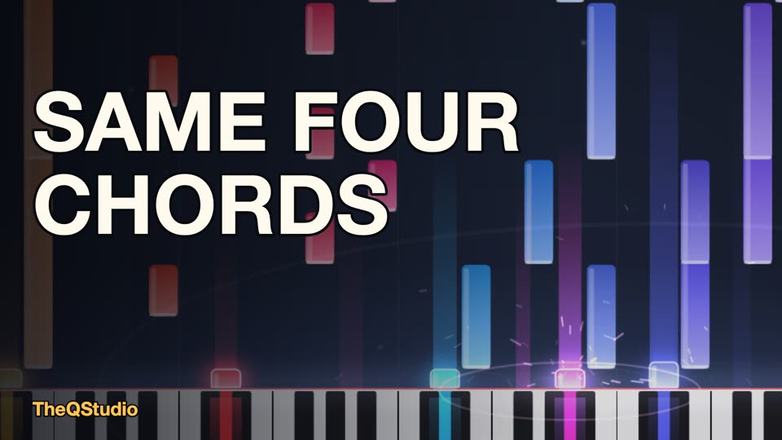
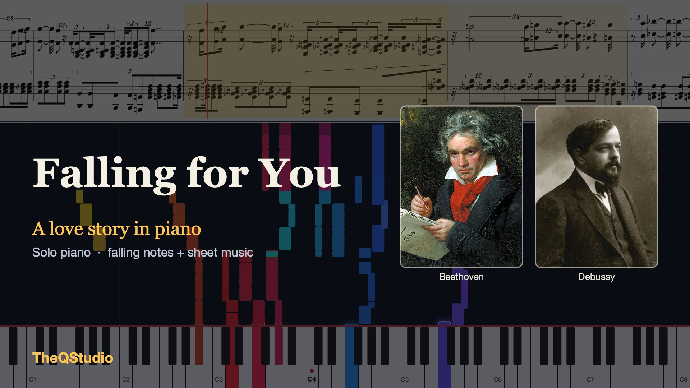
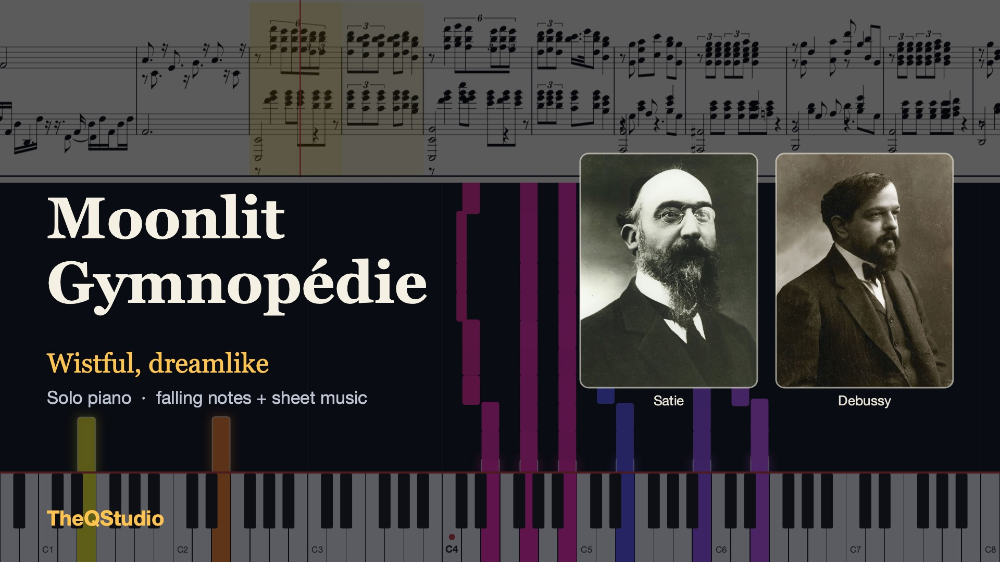

Piano you can watch, read and play along with.
Calm piano videos built from public-domain classical music. Falling notes on a keyboard, the sheet music above, no hands, just the music.

Latest
Same Four Chords
An original piano song: one small tune, four chords, and the long way back home. About three minutes.

Video
Falling for You (A Love Story in Piano)
Debussy, Schumann, Mozart and Beethoven tell a love story. About five minutes.

Video
Moonlit Gymnopédie
Satie, Bach and Debussy in one slow, wistful piece. About four minutes.
How it is made
Every piece starts from public-domain scores. Software arranges them, plays them with a human-like touch on a sampled grand piano, and draws the video. A person directs the work and listens to every version before anything is published.